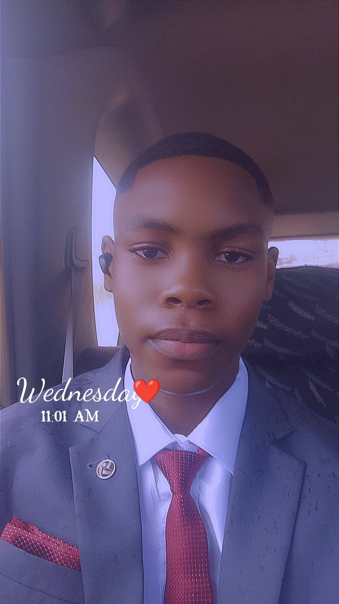

PREPARING YOUR EXPERIENCE...
AN EVOLVING MIND. A DISTINCTIVE VISION.
WELCOME TO MY WORLDWELCOME TO MY PERSONAL SPACE
### A LITTLE ABOUT ME I am an individual with a curious mind, a creative spirit, and a vision for becoming something greater than I am today. I believe that life is a continuous journey of discovery, growth, and self-development. I enjoy learning new things, exploring different ideas, asking questions, and challenging myself to see beyond what I already know. I'm naturally drawn to creativity, technology, innovation, and the endless possibilities that come with an open mind. I'm someone who appreciates the little details, enjoys discovering how things work, and finds excitement in turning ideas into something meaningful. Whether it's exploring the world of technology, learning a new skill, experimenting with creative ideas, or simply discovering something fascinating, I always find a reason to keep growing. I may still be figuring out certain parts of my journey, but I understand that greatness is not built in a day. Every experience, every lesson, every challenge, and every new opportunity contributes to the person I am becoming. Beyond my interests and ambitions, I value originality, curiosity, personal growth, and the courage to be different. I don't believe I have to have everything figured out before I start creating the life I envision for myself. This portfolio is more than just a website. It is a little reflection of who I am, what interests me, what I'm learning, and the person I aspire to become. I am still growing, still exploring, still learning, and still creating. **This is only the beginning of my story.**
DISCOVER MORE
Hello! I'm omosule ayobami simeon. Welcome to my portfolio. This is where I share my journey, interests, skills and the projects I'm working on.
I have designed my very own Portfolio when i was studing as a student at sabi programmeers
**The Mindset Project** A personal exploration of creativity, discipline, innovation, and continuous self-development. This project represents my belief that every great achievement begins with an idea, a vision, and the determination to bring it to life. It reflects my commitment to thinking differently, learning continuously, and becoming better with every experience..
**Beyond Possibilities** A reflection of my curiosity about technology, innovation, and the limitless opportunities that exist beyond conventional thinking. I am fascinated by how ideas can evolve into meaningful creations. This project represents my ambition to explore new concepts, embrace challenges, and turn imagination into something extraordinary..
Email:ayobamiomosule@gmail.com
Phone: +234 9115192931
WhatsApp: Chat with me on WhatsApp
Let's connect and create something amazing.